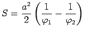

Die Gleichung der hyperbolischen Spirale in Polarkoordinaten lautet:
| (2.237) |
Die Kurve der hyperbolischen Spirale besteht aus zwei Zweigen, die symmetrisch zur y-Achse verlaufen. Für beide Zweige ist die Gerade y=a Asymptote und der Koordinatenursprung asymptotischer Punkt.
Der Flächeninhalt des Sektors P10P2 beträgt , wobei gilt: .
Der Krümmungsradius ist